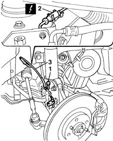
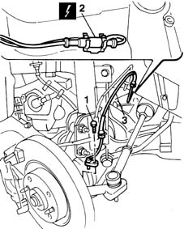

3340A32 front wheel rpm sensors (two) - r r
- Path
- Procedures > 33 BRAKING SYSTEM > 3340 A(B.S. ANTI-LOCK BRAKING SYSTEM .) > 3340A abs check/adjustment devices > 3340A32 front wheel rpm sensors (two) - r r
- Kind
- repair procedure (removal / refitting; the operation number is the code)
- Applies to
- all engines; all production periods
- Interactive page
- https://sloeber94.github.io/elrnDB-fMltpl/en/#/2891646
Applies to: all engines; all production periods
 Removing
Removing
 Refitting
Refitting4450B12 front or rear wheels (two) - r+r
1. Undo the bolt securing the right front wheel rpm sensor.
Lower the ramp.
Open the bonnet lid.
2. Disconnect the ABS wheel sensor electrical connection.
3. Remove the right rpm sensor from the upper part of the car.
 | Name | Connector |
|---|---|---|
2 | Front wheel sensor RH for ABS |

Applies to: all engines; all production periods
1048A10 AIR CLEANER FILTERING ELEMENT - REPLACE
Raise the ramp.
1. Undo the bolt securing the left front wheel rpm sensor.
Lower the ramp.
2. Disconnect the ABS wheel sensor electrical connection.
3. Remove the left rpm sensor from the upper part of the car.
| Name | Connector |
|---|---|---|
2 | Front wheel sensor left for ABS |

Applies to: all engines; all production periods
Refitting
RemovingFit the left wheel rpm sensor, positioning the electrical wiring correctly.
Connect the electrical connector.
Raise the ramp.
Screw in the rpm sensor retaining bolt.
 | Fastening | Component | Ø | Value (daNm) |
|---|---|---|---|---|
- | Left bolt | ABS SYSTEM FRONT WHEEL RPM SENSOR | M6 | 0.7 |
Lower the ramp.
1048A10 AIR CLEANER FILTERING ELEMENT - REPLACE
Fit the right wheel rpm sensor, positioning the wiring correctly.
Connect the electrical connector.
Raise the ramp.
Screw in the rpm sensor retaining bolt.
| Fastening | Component | Ø | Value (daNm) |
|---|---|---|---|---|
- | Right bolt | ABS SYSTEM FRONT WHEEL RPM SENSOR | M6 | 0.7 |
Topics linked from this page (5)
- 1048A10 AIR CLEANER FILTERING ELEMENT - REPLACE
- 4450B12 front or rear wheels (two) - r+r
- 5530B10 battery - r+r
- K70 Front wheel sensor left for ABS
- K71 Front wheel sensor RH for ABS